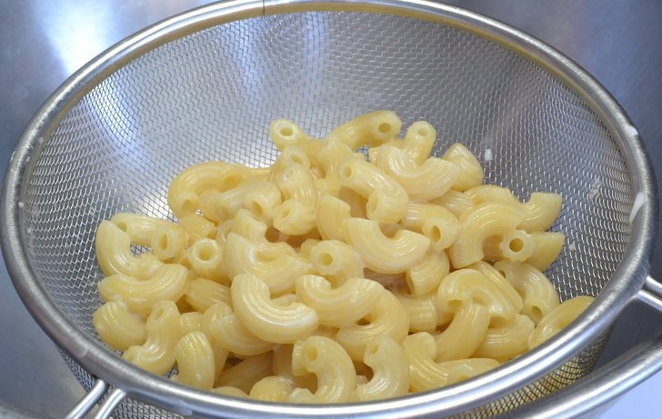
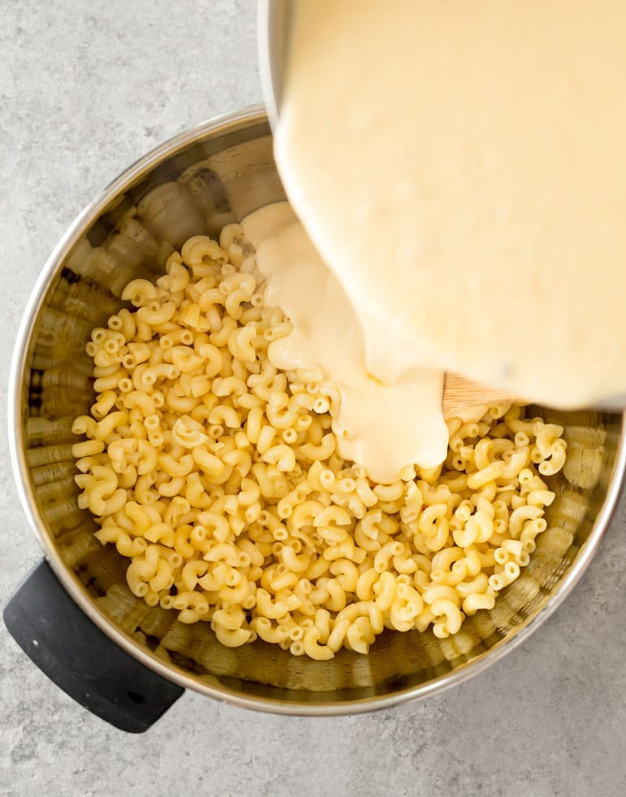

Preheat oven to 325 degrees F and grease a 3 qt baking dish (9x13"). Set aside.
Bring a large pot of salted water to a boil. When boiling, add dried pasta and cook 1 minute less than the package directs for al dente. Drain and drizzle with a little bit of olive oil to keep from sticking.

While water is coming up to a boil, grate cheeses and toss together to mix, then divide into three piles. Approximately 3 cups for the sauce, 1 1/2 cups for the inner layer, and 1 1/2 cups for the topping.
Melt butter in a large saucepan over MED heat. Sprinkle in flour and whisk to combine. Mixture will look like very wet sand. Cook for approximately 1 minute, whisking often. Slowly pour in about 2 cups or so of the milk/half and half, while whisking constantly, until smooth. Slowly pour in the remaining milk/half and half, while whisking constantly, until combined and smooth.
Continue to heat over MED heat, whisking very often, until thickened to a very thick consistency. It should almost be the consistency of a semi thinned out condensed soup.
Stir in spices and 1 1/2 cups of the cheeses, stirring to melt and combine. Stir in another 1 1/2 cups of cheese, and stir until completely melted and smooth.

In a large mixing bowl, combine drained pasta with cheese sauce, stirring to combine fully. Pour half of the pasta mixture into the prepared baking dish. Top with 1 1/2 cups of grated cheeses, then top that with the remaining pasta mixture.
Sprinkle the top with the last 1 1/2 cups of cheese and bake for 15 minutes, until cheesy is bubbly and lightly golden brown.